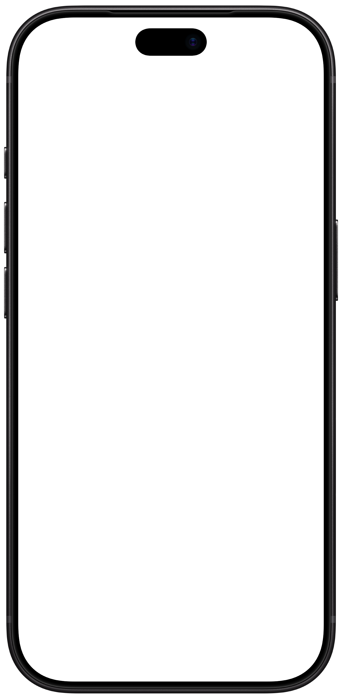
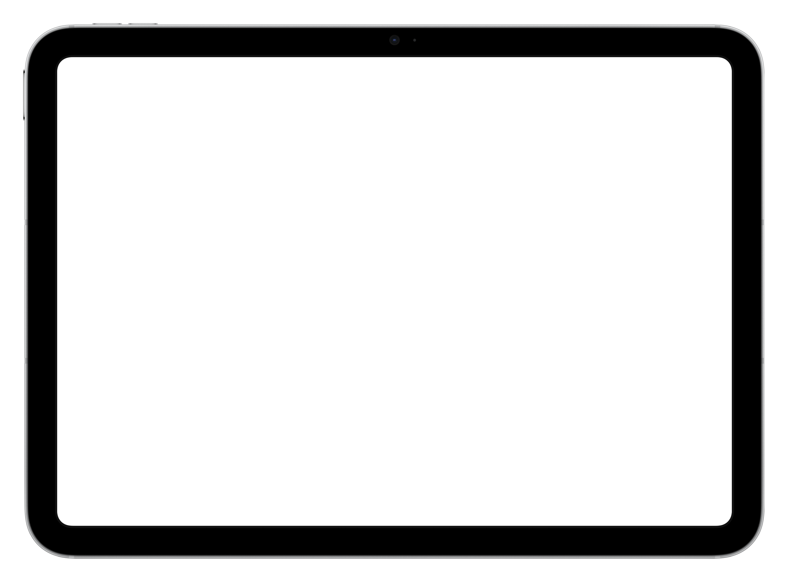

See the bigger picture.
Cash, credit and debt balances together. Choose a 3-, 6- or 12-month dashboard chart range.
Cash Predict is all about your present and future.


You can’t change last month’s spending.
You can change what happens next.
Start with today’s balances and the income, bills and plans ahead. Cash Predict helps you act on your future without entering a lifetime of past expenses.
Will your next payday cover what’s coming? Put scheduled income, bills and transfers in one cash flow forecast.
Cash, credit and debt balances together. Choose a 3-, 6- or 12-month dashboard chart range.
See the effect of scheduled payments before they arrive, and adjust your plans as life happens.
Current balances, financial insights and your plans ahead. One place to see what deserves your attention.
Keep the perspective.
Skip the micromanagement.

Keep the next bill and the bigger goal in the same picture.
See scheduled income, bills and transfers together. Set reminders so a due date doesn’t become a surprise.

Plan savings and debt payoff, with progress and estimated dates based on your scheduled contributions and payments.

Future Outlook connects your current balances and recurring plans to yearly net worth projections.
Adjust inflation, income growth and savings returns to explore how your assumptions change the outlook.
Projections are estimates based on your plans and assumptions. Actual results will vary.

Made for iPhone, iPad and Apple silicon Mac. Your records and preferences sync through your private iCloud database.


Widgets and Siri Shortcuts keep everyday information close at hand.
Financial insights highlight opportunities and risks in your balances and forecast.
iOS / iPadOS 26+ · macOS 26+ on Apple silicon
Checking, savings, other assets, credit and debt. No bank login required.
Schedule expected income, bills and transfers. Choose a frequency and set reminders.
Mark payments completed and adjust balances as life happens. Cash Predict updates your plans; it doesn’t move money at your bank.

No Cash Predict account to create. No bank credentials to hand over. Start with the balances you choose to enter.
Want another perspective? Export a PDF of your one-year forecast for your favorite AI app. You choose whether and where to share it.
Read the privacy details ↗No. Start with current balances, schedule expected income and payments, then adjust balances for everyday spending. The focus is your present and future.
Yes. The free version includes advertising; an optional Plus subscription removes ads. Current subscription options are shown in the app.
iPhone and iPad with iOS or iPadOS 26 or later, and Apple silicon Macs with macOS 26 or later through the Designed for iPad app. There is no Apple Watch app.
No Cash Predict account or bank login is required. Records sync through your private iCloud database. The app uses Firebase Analytics; analytics may include aggregate cash, savings, credit and debt balances. The free version includes Google advertising. Optional AI export creates a forecast PDF you choose whether to share.
Cash Predict reminds you about bills and records payments you mark completed. It does not move money at your bank. Projections depend on your balances, plans and assumptions and are estimates, not guarantees.
Yes. Export a PDF containing accounts, planned transactions and a one-year forecast. You choose the destination and whether to share it. Review the destination’s privacy terms before sending financial information.